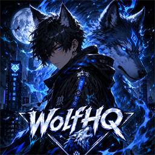

WOLFHQ
SECURE COMMAND CENTER // INITIALIZING FILE BRIDGE, TELEMETRY, AI MATRIX, AND UPDATE CHANNEL
VERIFYING LOCAL RUNTIME
LINKING GITHUB RELEASE CHANNEL
ARMING COMMAND INTERFACE
BOOT SEQUENCE READY